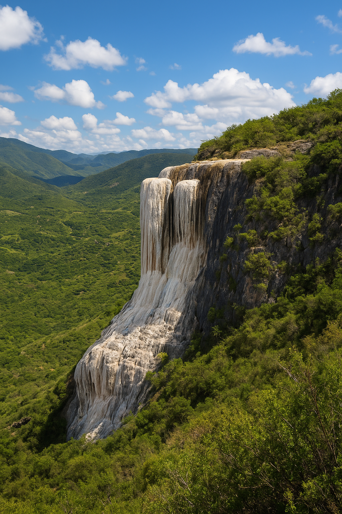

Hierve el Agua
Un paraíso natural famoso por sus cascadas petrificadas y aguas minerales. Es uno de los destinos más impresionantes de Oaxaca.

Mitla
Zona arqueológica mixteca conocida por sus mosaicos de piedra. Un lugar lleno de historia y tradición.
Centro Histórico
Declarado Patrimonio de la Humanidad por la UNESCO, el centro histórico de Oaxaca está lleno de calles empedradas, iglesias coloniales y mercados vibrantes.